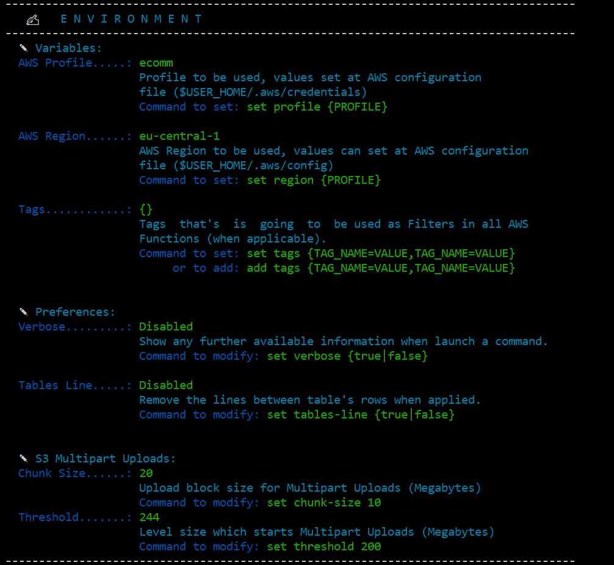

|
A simple "Python Shell" environment that you can use to "talk" with your account...
--> Install and enter... $:~pyawscp:
--> Graphically navigate on your AWS Networking resources using the command $:~navigator:
--> Export to drawIO the views generated by $:~navigator:
--> Upload objects in parts to S3, using the Multipart Upload command $:~transferS3 my-bucket-name,/home/myself/my-big-file.tar.gz:
--> Search for which EC2/ELB are behind a Route 53 DNS (view in Graph or ASCII) $:~nslookupEc2R53 www.my-company-site.uat.com,[graph]: Quick Start
--> Install & Run... Docs
All the documentation is available inside the own PyAwsCp Shell environment, check it out: # # Once inside, list all available commands... (aws-shell-cockpit)⛅:~ ls # or... (aws-shell-cockpit)⛅:~ ls -l # for a long and detailed listing of all available commands # # View how to use and check all options available for a specific command: (aws-shell-cockpit)⛅:~ help [command] (aws-shell-cockpit)⛅:~ help listEc2 (aws-shell-cockpit)⛅:~ help nslookupEc2R53 (aws-shell-cockpit)⛅:~ help transferToS3 # # In addition, you can also... (aws-shell-cockpit)⛅:~ clear (aws-shell-cockpit)⛅:~ !ls or !dir # Run a command on your OS (aws-shell-cockpit)⛅:~ [TAB] # Auto complete (aws-shell-cockpit)⛅:~ [Arrow-Up] # Command history ###################################################################### # More things... # Almost every function works with "generics" arguments that # makes possible some customizations at the result: ###################################################################### # desc - List in descending order (use the first column as default) # sort3 - Sort the table by a specific column number # showtags - When applicable, show the tags of the resource # verbose - Before the result, shows the same content (or more) in JSON # save - Save the same result's content in a external JSON file (results folder) # | {value} - Highligth the lines with the {value} content # | grep {value} - Filter the lines with the {value} content # Examples: (aws-shell-cockpit)⛅:~ listEc2 sort4,desc (aws-shell-cockpit)⛅:~ listEc2 | grep uat (aws-shell-cockpit)⛅:~ listTargetGroups verbose (aws-shell-cockpit)⛅:~ listBucketsS3 save,verbose # And... # - After every executed command, the result is also copied to your Clipboard! # - At navigator, use the mouse-right-button to opened permanently the window's popup info Versions
Configuration
The PyAwsCp Shell offers some options to configure preferences on your environment, to check which one, use the command: # # Show your environment preferences... (aws-shell-cockpit)⛅:~ environment # or... (aws-shell-cockpit)⛅:~ env # The short form # You will get something like this...  # # Each configurable option show its value and explains also how to change it, examples: (aws-shell-cockpit)⛅:~ set threshold 256 # Change the limit when perform Multipart Uploads (aws-shell-cockpit)⛅:~ set profile my-account # Change profile AWS Credential to use (aws-shell-cockpit)⛅:~ get threshold # You can also ask for the current value set ❖ Multipart Upload Threshold is set to 256 Notes
### What is this about? In a ordinary working day with Cloud, questions like below always poppup (frequently and recurrently):
### So What?
As Python Boto3 is far most powerful than AWS CLI, it can offers you tons of features to interact with AWS (it's not by chance that tools like Ansible Red Hat, after all, use it). I came up with the idea of build this sort-of "Shell" AWS utility to my day-to-day tasks, to help me, make the repetition less boring and bring some agility as well. That's where was born this idea (well, also something to do on my spare time when I am bored)
### Then...
Some other things I was thinking of, backlog:
I am always trying to add new features, when new needs or ideas are raising (of course when I have some off-time to dedicate to it). I am sharing the result of this, perhaps can be useful to someone else. Feel free to reach out to me with new ideas/suggestions, I will be glad to hear you. Contact
http://linkedin.com/in/ualter |